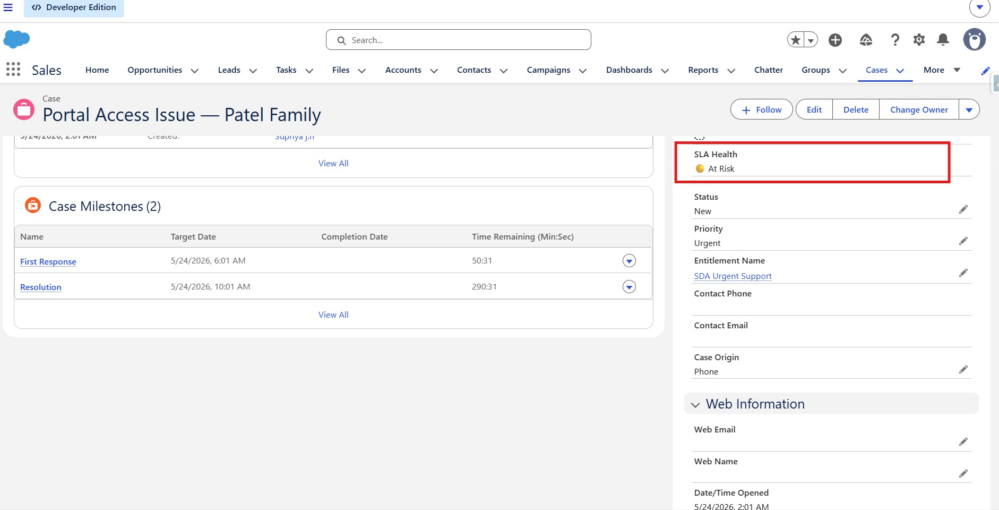
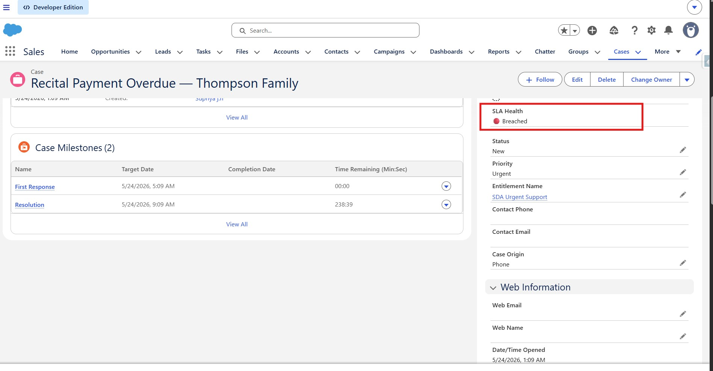
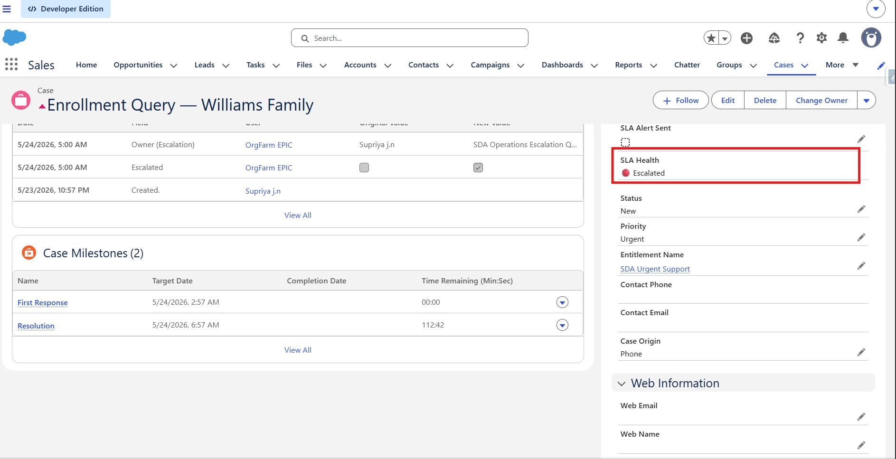

No visibility until it was too late
Sai Dance Academy's support team was managing parent and student cases across three locations — payment issues, enrollment queries, costume orders, schedule changes. All logged in Salesforce. None of it monitored.
A parent's payment error sat unresolved for four days. By the time the team responded, the parent had already posted about it on social media. The team had no early warning system — breaches only surfaced in retrospective reports, when the damage was already done.
Operations Manager Priya needed to know which cases were at risk before they breached — not after. And she needed it without running manual reports every morning.
A proactive SLA system — built entirely declaratively
A real-time SLA Command Centre using Salesforce Service Cloud's native Entitlements & Milestones framework. Automated alerts at 75% SLA usage, escalation flows that notify managers instantly, a formula-based health indicator on every case record, and a live dashboard — no Apex, no packages, no external tools.
SLA Health — live status on every case
Instead of making agents open reports, I built a formula field that calculates SLA health in real time directly on the case record. Every case shows one of five states:
The formula tracks the First Response window — the most critical SLA checkpoint for parent satisfaction — and updates automatically without any manual refresh.
Three tiers — mapped to real case types
-
Urgent — Payment failures, access issues First Response: 4 hours · Resolution: 8 hours · Warning at 3 hours
-
Standard — Enrollment queries, schedule changes First Response: 24 hours · Resolution: 48 hours · Warning at 18 hours
-
General — Feedback, newsletter requests First Response: 48 hours · Resolution: 120 hours · Warning at 36 hours
Five components working together
-
Entitlement Processes & Milestones Three Entitlement Processes (SDA_Urgent_SLA, SDA_Standard_SLA, SDA_General_SLA) each with First Response and Resolution milestones. The SLA clock starts the moment a case is created.
-
Automated 75% Warning Actions Milestone Warning Actions fire email alerts to the assigned agent at 75% of each SLA window — giving time to act before breach. Tested end-to-end with real cases.
-
Auto-Entitlement Assignment Flow A single Record-Triggered Flow uses Get Records (no hardcoded IDs) to automatically assign the correct Entitlement to every new case based on Priority. Zero manual work for agents.
-
Escalation Rules with Manager Notification Time-based Escalation Rules auto-reassign cases to the Operations queue and notify Priya (Operations Manager) when cases remain open beyond threshold hours. Criteria include Status = New to prevent closed case triggers.
-
Real-Time Service Cloud Dashboard Three-component dashboard: case health donut, breach risk by agent bar chart, and 30-day SLA compliance trend. Running user set to Operations Manager for consistent data across all viewers.
From case creation to resolution
How it was built — step by step
Enabled the Entitlements feature in Service Cloud settings. Added Entitlement Name and Case Milestones related list to the Case page layout. Created three Entitlement records linked to their respective Entitlement Processes via the SLA Policy field.
Created SDA_Urgent_SLA, SDA_Standard_SLA, and SDA_General_SLA — each with First Response and Resolution milestones. Added Warning Actions at 75% of each window to trigger the email alert.
⚠️ Challenge: Milestones become locked after first use — cannot be edited. Resolved by creating a test process for configuration changes and documenting this as a production consideration.A single Record-Triggered Flow on Case creation. Uses a Decision element to check Priority, then Get Records to fetch the correct Entitlement (no hardcoded IDs — production-safe), then Update Records to set EntitlementId on the case.
Formula field on Case tracking the First Response window using ISPICKVAL() for picklist comparison. Returns five states: On Track, At Risk (75%+), Breached, Escalated, Closed. Updates in real time on every case record.
⚠️ Challenge: Salesforce restricts picklist fields in IF() statements — must use ISPICKVAL() instead. Also updated Priority picklist from High/Medium/Low to Urgent/Standard/General to match the SLA design.Three rule entries (Urgent: 6hr, Standard: 36hr, General: 96hr) each with Status = New criteria to prevent escalation firing on closed cases. Actions reassign to SDA Operations Escalation Queue and notify the Operations Manager.
Three reports using Cases with Milestones report type: open cases by milestone status, breach risk by owner, and 30-day compliance trend. Assembled into a Service Cloud dashboard with running user set to Operations Manager.
⚠️ Challenge: MilestoneStatus not directly filterable in reports — used Violated and Completion Date fields instead. Date filters also behave differently in this report type.Created 14 test cases across all three priority tiers. Verified auto-entitlement assignment, SLA Health formula transitions, Warning Action emails (including spam folder behaviour in dev org), escalation rule firing, and dashboard data population.
Decisions made & limitations found
Real builds involve real tradeoffs. Here's what I encountered and how I handled it:
Configuration stack
What the system delivers
From the live Salesforce org

SLA Command Centre Dashboard — viewing as Operations Manager

Case record — SLA Health: 🟢 On Track

Case record — SLA Health: 🟡 At Risk

Case record — SLA Health: 🔴 Breached

Case record — SLA Health: 🔴 Escalated + auto-reassigned

Automated 75% warning email received by agent